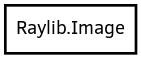

Image
Object Hierarchy:

Description:
[ SimpleType ]
[ CCode ( cname = "struct Image" , free_function = "UnloadImage" , has_type_id = false ) ]
public struct Image
Content:
Static methods:
Creation methods:
- public Image.from_color_data (Color[] pixels, int width, int height)
Load image from Color array data (RGBA - 32bit)
- public Image.from_data (uint8[] data, int width, int height, int format)
Load image from raw data with parameters
- public Image.from_file (string file_name)
Load image from file into CPU memory (RAM)
- public Image.from_file_raw (string file_name, int width, int height, int format, int header_size)
Load image from RAW file data
- public Image.gen_cellular (int width, int height, int tile_size)
Generate image: cellular algorithm. Bigger tileSize means bigger cells
- public Image.gen_checked (int width, int height, int checks_x, int checks_y, Color col1, Color col2)
Generate image: checked
- public Image.gen_color (int width, int height, Color color)
Generate image: plain color
- public Image.gen_gradient_h (int width, int height, Color left, Color right)
Generate image: horizontal gradient
- public Image.gen_gradient_radial (int width, int height, float density, Color inner, Color outer)
Generate image: radial gradient
- public Image.gen_gradient_v (int width, int height, Color top, Color bottom)
Generate image: vertical gradient
- public Image.gen_perlin_noise (int width, int height, int offset_x, int offset_y, float scale)
Generate image: perlin noise
- public Image.gen_white_noise (int width, int height, float factor)
Generate image: white noise
Methods:
- public Image copy ()
Create an image duplicate (useful for transformations)
- public void export (string file_name)
Export image data to file
- public void export_as_code (string file_name)
Export image as code file defining an array of bytes
- public Color[] get_data ()
Get pixel data from image as a Color struct array
- public Vector4[] get_data_normalized ()
Get pixel data from image as Vector4 array (float normalized)
- public Image splice (Rectangle rec)
Create an image from another image piece
Fields: